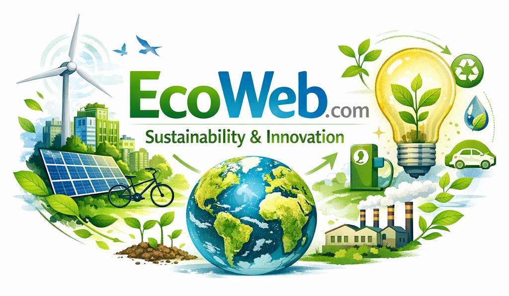

💧
Cuidado del Agua
El agua es vida, ¡úsala con responsabilidad!
Un proyecto de la Media Técnica en Diseño y Desarrollo de Software para promover el cuidado del medioambiente a través de la tecnología.
🌿 Comenzar el reto ↓
Haz clic en cada tarjeta para conocer un consejo diferente.
El agua es vida, ¡úsala con responsabilidad!
Clasificar residuos ayuda a proteger el planeta.
Los bosques y la biodiversidad son nuestro hogar.
Responde las preguntas y demuestra cuánto sabes sobre el cuidado del planeta.
Elige una respuesta para continuar.
HTML estructura, CSS diseña y JavaScript permite interactuar.
Organiza títulos, textos, tarjetas, imágenes y botones.
<h1>EcoWeb Anorí</h1>
Controla colores, tamaños, espacios y adaptación a celulares.
color: #168a4b;
Detecta clics, muestra consejos, revisa respuestas y suma puntos.
puntaje = puntaje + 1;